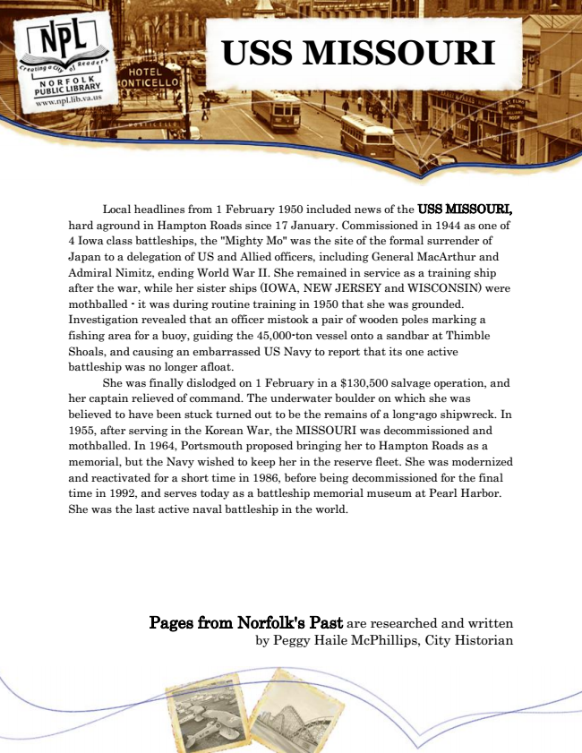

USS MISSOURI
Local headlines from 1 February 1950 included news of the USS MISSOURI, hard aground in Hampton Roads since 17 January. Commissioned in 1944 as one of 4 Iowa class battleships, the "Mighty Mo" was the site of the formal surrender of Japan to a delegation of US and Allied officers, including General MacArthur and Admiral Nimitz, ending World War II. She remained in service as a training ship after the war, while her sister ships (IOWA, NEW JERSEY and WISCONSIN) were mothballed - it was during routine training in 1950 that she was grounded. Investigation revealed that an officer mistook a pair of wooden poles marking a fishing area for a buoy, guiding the 45,000-ton vessel onto a sandbar at Thimble Shoals, and causing an embarrassed US Navy to report that its one active battleship was no longer afloat.
She was finally dislodged on 1 February in a $130,500 salvage operation, and her captain relieved of command. The underwater boulder on which she was believed to have been stuck turned out to be the remains of a long-ago shipwreck. In 1955, after serving in the Korean War, the MISSOURI was decommissioned and mothballed. In 1964, Portsmouth proposed bringing her to Hampton Roads as a memorial, but the Navy wished to keep her in the reserve fleet. She was modernized and reactivated for a short time in 1986, before being decommissioned for the final time in 1992, and serves today as a battleship memorial museum at Pearl Harbor. She was the last active naval battleship in the world.
Pages from Norfolk's Past are researched and written by Peggy Haile McPhillips, City Historian